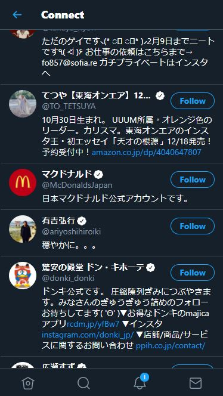
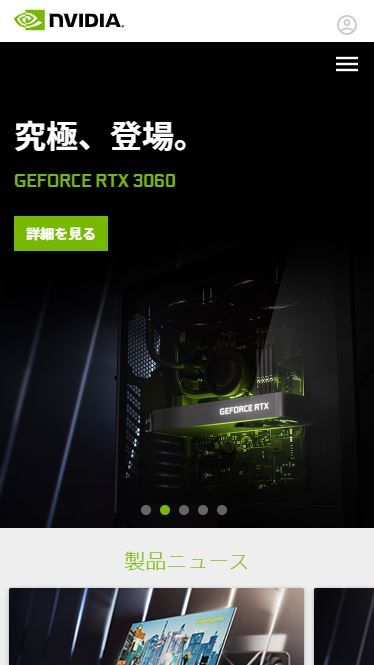

As you can see in the picture, Google search page uses alignment principle to align all elements on page to link all elements together. These elements include the list icon, search icon, tabs, searching results, etc.

In this Twitter example, they apply the repetition design using repetitive colors on each line break, same color on each account's name, and same design on each "Follow" button to create unity and clean appearance on page.

The homepage of Nvidia chooses 3 contrasting colors black and light green and white, to create an atmosphere of stylish and technology. The pitch dark background contrast well with the white words and green-lighted product which catches audiences' eyes.